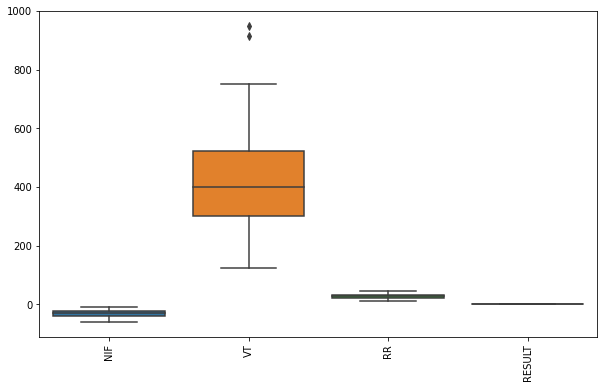

Soporte respiratorio
41:42 min | Última modificación: Mayo 27, 2021 | [YouTube]
[1]:
import warnings
warnings.filterwarnings("ignore")
Definición del problema
La decisión de cuando un paciente con soporte respiratorio puede respirar por sus propios medios fue un problema muy importante en la década de los 90. En este caso se desea construir un modelo de redes neuronales que permita pronósticar cuando se puede retirar el soporte mecanico. Se tiene un dataframe con las siguientes columnas:
NIF: negative inspiratory pressure (cm. H20).
VT: tidal volume.
RR: respiratory rate (breaths/minute).
Result: success/failure
Los primeros 21 patrones son usados para entrenamiento y los restantes para validación.
[2]:
import pandas as pd
df = pd.read_csv(
"https://raw.githubusercontent.com/jdvelasq/datalabs/master/datasets/weaning.csv",
sep = ',', # separador de campos
thousands = None, # separador de miles para números
decimal = '.') # separador de los decimales para números
df.head()
[2]:
| NIF | VT | RR | RESULT | |
|---|---|---|---|---|
| 0 | -24 | 300 | 24 | success |
| 1 | -30 | 500 | 17 | failure |
| 2 | -23 | 300 | 29 | success |
| 3 | -26 | 265 | 44 | failure |
| 4 | -18 | 370 | 32 | failure |
[3]:
from sklearn import preprocessing
encoder = preprocessing.LabelEncoder().fit(df.RESULT)
df["RESULT"] = encoder.transform(df.RESULT)
Análisis Exploratorio
[4]:
df.describe()
[4]:
| NIF | VT | RR | RESULT | |
|---|---|---|---|---|
| count | 30.000000 | 30.000000 | 30.000000 | 30.000000 |
| mean | -29.900000 | 439.433333 | 27.900000 | 0.500000 |
| std | 12.340989 | 200.239285 | 8.470435 | 0.508548 |
| min | -60.000000 | 124.000000 | 13.000000 | 0.000000 |
| 25% | -40.000000 | 300.000000 | 22.250000 | 0.000000 |
| 50% | -28.000000 | 400.000000 | 27.500000 | 0.500000 |
| 75% | -22.000000 | 522.500000 | 32.000000 | 1.000000 |
| max | -10.000000 | 950.000000 | 46.000000 | 1.000000 |
[5]:
import matplotlib.pyplot as plt
import seaborn as sns
#
# Los rangos de las variables numéricas son
# bastantes diferentes
#
plt.figure(figsize=(10, 6))
sns.boxplot(data=df)
plt.xticks(rotation=90);

[6]:
from sklearn.preprocessing import MinMaxScaler
#
# Se escalan todas las variables al rango [0, 1]
# para evitar problemas asociados a la escala
#
scaler = MinMaxScaler()
df_norm = pd.DataFrame(scaler.fit_transform(df), columns=df.columns)
df_norm.head()
[6]:
| NIF | VT | RR | RESULT | |
|---|---|---|---|---|
| 0 | 0.72 | 0.213075 | 0.333333 | 1.0 |
| 1 | 0.60 | 0.455206 | 0.121212 | 0.0 |
| 2 | 0.74 | 0.213075 | 0.484848 | 1.0 |
| 3 | 0.68 | 0.170702 | 0.939394 | 0.0 |
| 4 | 0.84 | 0.297821 | 0.575758 | 0.0 |
[7]:
plt.figure(figsize=(10, 6))
sns.boxplot(data=df_norm)
plt.xticks(rotation=90);

Desarrollo y evaluación del modelo
[8]:
#
# Crea el modelo con una capa oculta
#
from sklearn.metrics import confusion_matrix
from sklearn.neural_network import MLPClassifier
from sklearn.model_selection import GridSearchCV
parameters = [
{
"hidden_layer_sizes": [(h,) for h in range(10)],
"learning_rate_init": [
0.01,
0.05,
0.10,
0.15,
0.20,
0.25,
0.30,
],
"momentum": [
0.60,
0.70,
0.80,
0.90,
],
},
]
m = GridSearchCV(
MLPClassifier(
activation="logistic",
learning_rate="adaptive",
max_iter=2000,
),
parameters,
cv=10,
verbose=0,
)
m.fit(df_norm[['NIF', 'VT', 'RR']][:21], df_norm.RESULT[:21])
m.best_estimator_
[8]:
MLPClassifier(activation='logistic', alpha=0.0001, batch_size='auto',
beta_1=0.9, beta_2=0.999, early_stopping=False, epsilon=1e-08,
hidden_layer_sizes=(1,), learning_rate='adaptive',
learning_rate_init=0.1, max_fun=15000, max_iter=2000,
momentum=0.7, n_iter_no_change=10, nesterovs_momentum=True,
power_t=0.5, random_state=None, shuffle=True, solver='adam',
tol=0.0001, validation_fraction=0.1, verbose=False,
warm_start=False)
[9]:
#
# Pronostico
#
df_norm["RESULT_pred"] = m.predict(df_norm[['NIF', 'VT', 'RR']])
confusion_matrix(
y_true=df_norm.RESULT[:21],
y_pred=df_norm.RESULT_pred[:21],
)
[9]:
array([[11, 1],
[ 0, 9]])
[10]:
confusion_matrix(
y_true=df_norm.RESULT[21:],
y_pred=df_norm.RESULT_pred[21:],
)
[10]:
array([[2, 1],
[0, 6]])